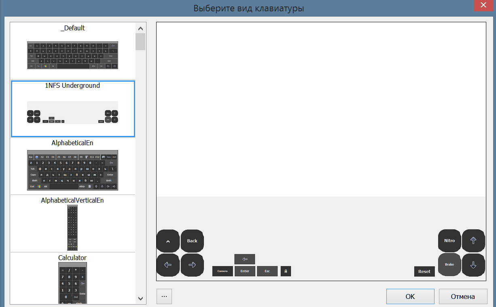

Сенсорное управление в играх при помощи программы Comfort Keys Pro
Вообще, данная программа - это прежде всего альтернативная сенсорная клавиатура. И, к слову, данная клавиатура на порядок лучше стандартной клавиатуры в Windows 8.1, однако стандартным клавиатурам в Windows 10 и Windows 11 она проигрывает. Также вы можете использовать данную клавиатуру в неофициальных лёгких сборках Windows, если из сборки вырезали стандартную. Но всё же у данной клавиатуры перед стандартной есть пара преимуществ - прозрачность и кастомизация. В старых версиях Windows 10 (в версии 1909, насколько я помню), при помощи сторонних программ, была возможность сделать клавиатуру полупрозрачной. Затем, после одной из новых версий, эти сторонние программы перестали действовать и стандартная клавиатура ну никак не желает становиться полупрозрачной.
Если с какой-нибудь игрой GestureWorks Gameplay не справляется, то данная клавиатура придёт вам на помощь, но далеко не всегда. К примеру в играх сделанных на DDraw клавиатуру видно не будет, увы. Для работы данной клавиатуры в играх крайне важно задать игре режим совместимости с Windows XP SP2. У меня есть лишь одно предположение почему так происходит. Возможно, в режиме совместимости с XP, операционная система запускает игру в неком оконном безрамочном режиме, а вот с оконными играми у Comfort Keys нет никаких проблем. Если же вы не зададите режим совместимости с Windows XP, то клавиатура всё равно как бы существует, на кнопки можно нажимать, просто они не будут отрисовываться поверх игры.
Comfort Keys Pro также имеет и несколько минусов:
- Программа является платной
- В программе присутствует ряд багов
- Редактор клавиатуры неудобен в использовании
- Нельзя сделать отдельные кнопки клавиатуры полностью прозрачными
- Comfort Keys в целом имеет аскетичный дизайн и интерфейс, который навевает нотки Windows XP
Тема оформления
Снимаем галочки с "Отображать заголовок окна" и "Отображать кнопки окна". Регулируем ползунок "Общая прозрачность" по своему вкусу. "Прозрачность фона" можно не трогать, так как в редакторе, при создании своей собственной клавиатуры, мы и так сможем выбрать прозрачность фона. "Стиль оформления" и иконку можете выбрать по своему вкусу.
Экранная клавиатура
"Вид клавиатуры" - здесь мы будем создавать свою собственную клавиатуру и выбирать её в качестве активной. В остальном здесь не нужно ставить никаких галочек.
Расположение
Здесь мы можем наблюдать кривизну работы Comfort Keys Pro. Периодически расположение клавиатуры будет сбиваться и вам нужно будет заходить сюда чтобы передвинуть клавиатуру в низ экрана. Делается это следующим образом: снимаете галочку с "Закрепить", ставите галочку на "Прикоснитесь двумя пальцами, чтобы переместить", затем касаетесь двумя пальцами вашей клавиатуры и передвигаете её в низ экрана. Затем снова ставите галочку на "Закрепить" и галочка "Прикоснитесь двумя пальцами, чтобы переместить" автоматически станет неактивной. Почему мы не оставляем её включённой? Потому что данный мультитач жест отключает возможность одновременного нажатия двух и более кнопок клавиатуры. Возьмём к примеру тот же Need For Speed. Нам нужно держать одним пальцем кнопку газа и другим пальцем рулить машиной. Если галочка "Прикоснитесь двумя пальцами, чтобы переместить" будет активна, то вы сможете нажимать либо на газ, либо на повороты, одновременно обе кнопки не нажмутся, что для игр является критичной проблемой. Для игр пристыковка нам не нужна. Она делает то же самое, что и стандартная клавиатура в Windows 8.1 - отодвигает вверх всё, что находится под клавиатурой. Если вы будете пользоваться Comfort Keys Pro по прямому назначению, то включайте пристыковку, если вам это нужно, но когда клавиатура прозрачная, то эта функция и вовсе не потребуется, так как мы и так видим всё что под ней находится.
Масштаб
Здесь нужно поставить галочки на "Растягивать по ширине", "Сохранять пропорции" и "Зафиксировать размер окна". Ширина экрана должна стоять на 100%. Здесь снова имеется баг, регулировка высоты клавиатуры не работает если не поставить и снять галочку на "Растягивать по высоте". Саму же высоту клавиатуры выставляйте по своему вкусу. Далее нажмите кнопку "Экспертные настройки", пройдитесь по всем вкладкам и настройте вот так:
- Указатель мыши: Нет (таким образом при касании на любую кнопку вы не будете видеть поверх неё системный курсор мыши)
- Поставьте галочку на "Сменить нажатую клавишу, когда вы касаетесь клавиши и двигаете пальцем (удобно для компьютерных игр)"
В целом базовая настройка завершена, но вы можете дополнительно покопаться в этих настройках, если вам это нужно. Теперь давайте разберём создание собственнных клавиатур.
Переходим в настройках в уже знакомую вкладку "Экранная клавиатура" и там где "Вид клавиатуры" нажимаем на три точки. Вы увидите практически все стандартные клавиатуры, чтобы отобразить скрытые нужно нажать на три точки и выбрать "Показать клавиатуры для компьютерных игр". После этого список пополнится всякими интересными вариантами, среди которых можно отметить клавиатуры выполненные в стиле геймпадов для эмуляторов SNES и Game Boy. Если вы играете на эмуляторах данных консолей, то у вас уже есть готовые, симпатично выглядящие варианты.
Но сейчас нас интересует создание собственных клавиатур. Будем создавать клавиатуру для игры в Need For Speed Underground. Выбираем любую клавиатуру, возвращаемся назад из списка клавиатур и нажимаем на кнопку "Изменить". Выбранная в данный момент активная клавиатура откроется в редакторе и вы вольны перемещать кнопки и изменять их размеры. Ранее я писал, что редактор очень неудобен в использовании и, думаю, вы уже сами успели в этом убедиться. Без клавиатуры, мыши или хотя бы стилуса работать в нём крайне неудобно из-за того самого пресловутого аскетичного дизайна программы.
Процесс создания клавиатуры очень прост, вы нажимаете на кнопку "Добавить", с иконкой в виде зелёного плюсика, выбираете из списка нужную кнопку клавиатуры (или нажимаете кнопку непосредственно на клавиатуре), затем перемещаете её в удобное для вас место. Если вы ошиблись и выбрали не ту кнопку, либо просто редактируете уже готовую клавиатуру, то чтобы изменить клавишу клавиатуры нужно нажать на кнопку "Поменять местами" с иконкой в виде двух зелёных стрелочек, смотрящих друг на друга. Раздел "Точки" в нижнем-левом углу редактора нужен чтобы создавать кнопки кастомной формы вместо стандартного квадрата. Рядом находятся настройки расположения кнопки и её размеров. Чуть ниже находится управление положением кнопок в виде клавиатурного блока со стрелочками, но наэкранные кнопки можно перемещать и физическими стрелочками на вашей клавиатуре. Если нажать на кнопку "Надпись", то откроется меню редактирования надписи, которая будет написана на кнопке, а также её шрифта и размера. Например, в случае с игрой NFS Underground, если вместо просто буквы "X" вы хотите чтобы было написано "Nitro". Вы также можете использовать скачанные из интернета иконки вместо надписей, для этого нужно нажать на кнопку "Изображение/цвет". Лично я скачиваю иконки с сайта flaticon.com, для скачивания вам потребуется регистрация на данном сайте. Стоит также отметить, что на сайте есть ограничение по количеству загруженных в день иконок, но я с ним сталкивался всего единожды, когда удалил по ошибке несколько десятков скачанных иконок и принялся загружать их заново. Если выбранная вами иконка вылезает за пределы кнопки, то поставьте галочки на "Растягивать по ширине" и "Растягивать по высоте", либо скачивайте иконки меньшего размера. Всё зависит от размеров кнопок, которые вы же и задаёте при их создании. Нажмите на кнопку "Параметры" и поставьте галочку возле "Прозрачность фона", таким образом всё пространство вне кнопок исчезнет и останутся лишь сами кнопки. И последнее, размеры над кнопками "Параметры" и "Изменение размера" - это размеры самой клавиатуры. Соответственно ширина желательно должна равняться ширине вашего нативного разрешения экрана. Если у вас экран FullHD 1920x1080, то и ширина клавиатуры тоже должна быть 1920 пикселей. Желательно, но это не обязательно, так как ранее, при настройке, мы ставили галочку на "Сохранять пропорции" и тем самым программа сама подстроит меньшую ширину клавиатуры под полную ширину вашего экрана. Однако в таком случае кнопки будут другого размера, нежели то, что вы видите в редакторе.